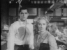
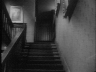
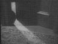

|
Hitchcock, la légende du suspense |
|

|
Arbogast est un élément majeur pour l'intrigue de Psychose. La mine patibulaire de l'acteur Martin Balsam y est certainement pour beaucoup... (comme nous l'avons dit précédemment, personne n'est vraiment sympathique dans ce film !)
Il va de nouveau s'intéresser à l'argent dérobé par Marion que nous
avons quelque peu délaissé depuis son meurtre (d'autant qu'il est
englouti dans l'étang avec sa voiture et son cadavre). Sa première
apparition
a lieu au moment où Leila (Vera Miles) la soeur
de Marion rencontre Sam dans son épicerie afin d'avoir des nouvelles de
Marion, disparue depuis plusieurs jours :  lorsque le détective entre dans l'épicerie
Son intime conviction est que Sam et Leila sont complices du vol de l'argent
qu'il est chargé de retrouver. C'est donc en fouillant la région de fond en
comble qu'il tombe sur le motel
isolé de Norman Bates. Peu convaincu par les réponses évasives de Norman sur
la venue éventuelle de Marion,
il insiste pour rencontrer Madame Bates. Devant le refus de Norman, il fait
mine de partir et téléphone à Sam et Leila leur signalant qu'il part interroger la maman sans l'autorisation de son fiston.  Il s'introduit subrepticement dans la maison, grimpe lentement l'escalier à la recherche de la chambre de Mamie Bates.

une porte s'ouvre alors lentement, laissant passer un filet de lumière aiguisé
comme un poignard Etonnant...non ? :-) Le shérif apprend de plus à Sam et Leila que la mère de Norman est morte et enterrée au cimetière de la ville depuis huit ans... Selectionnez
une des parties du film :
Recommandations techniques: © 1995-2023, Pierre Ficheux |
 Psychose, le détective Arbogast
Psychose, le détective Arbogast